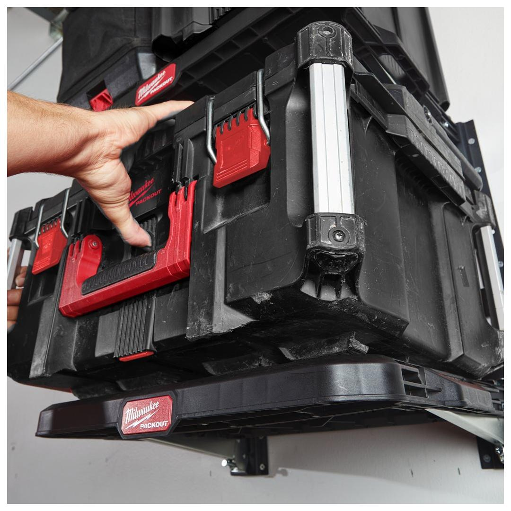
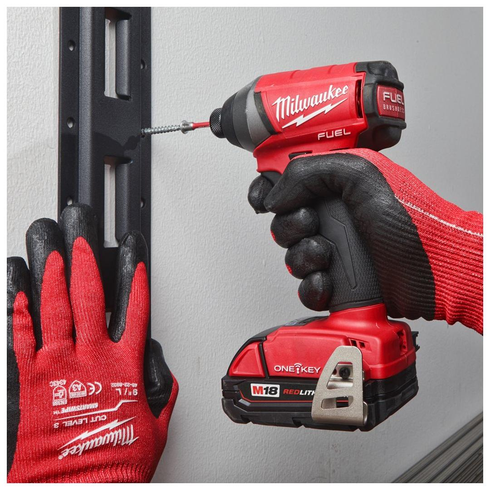
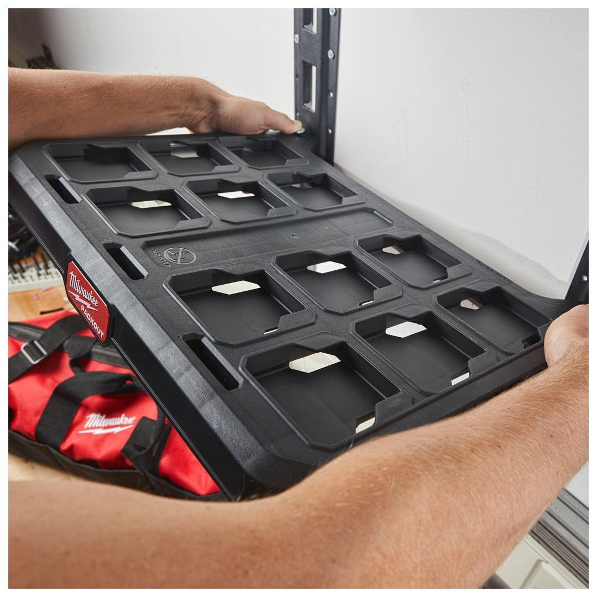
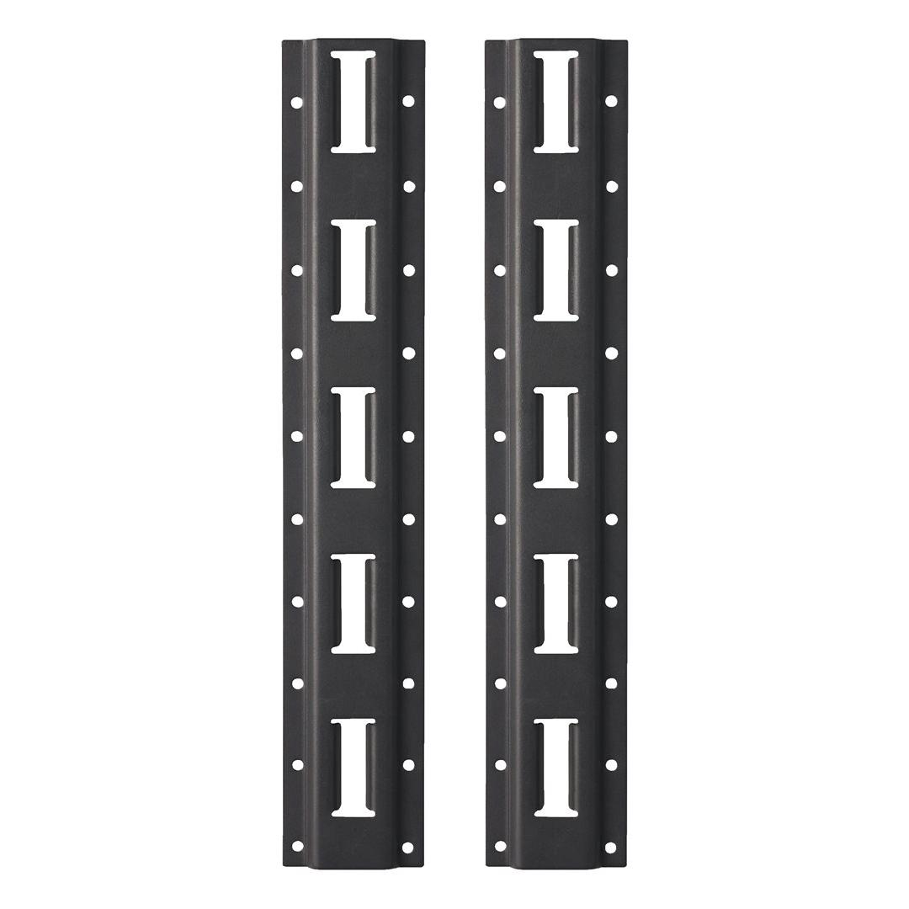
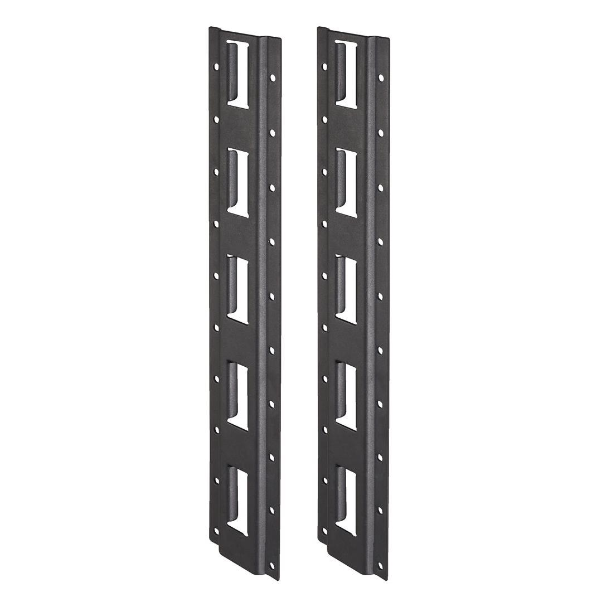

<h1>Milwaukee | PACKOUT� racking system</h1><p>4932478996</p><div style="display:flex;flex-wrap:wrap;gap:8px"></div><h4>Features</h4><ul><li>E-Track mounting rails can be mounted on the wall in vehicles, shops or garages for ultimate versatility.</li><li>Quick release design for easy mounting, height adjustment and removal of the shelves.</li><li>Each shelf supports up to 22 kg of weight.</li><li>Metal reinforced frame.</li><li>Impact resistant polymer construction.</li><li>Part of the PACKOUT™ modular storage system.</li></ul><h4>Information</h4><table><tr><td>Dimensions (mm)</td><td>25 x 90 x 508</td></tr><tr><td>Pack quantity</td><td>2</td></tr></table><h4>Weight</h4><table><tr><td>WEB_You tube Milwaukee 1x1 Product Clip</td><td>BoxHZFo01eA</td></tr></table>